Amendment #279 (S.O. 277(E), 2005)
4 changes: 1 to the First Schedule, 3 to the Second Schedule. 4 applied
What it did to the ministries
- shrankMinistry of Health and Family Welfare shrinks from 87 to 43 subjects change 1, 3 · histories: Health and Family Welfare
The order, page by page
Page 1 of 18
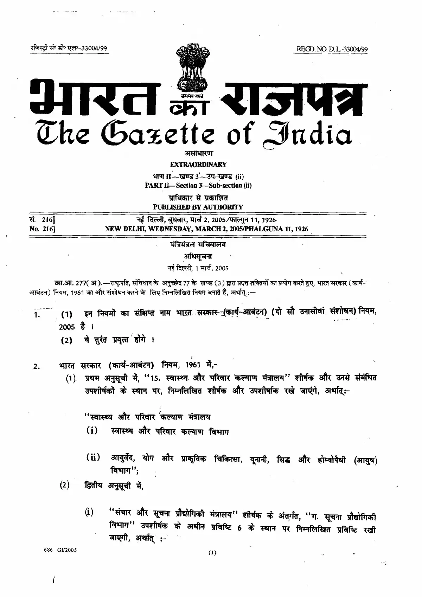
Page 2 of 18
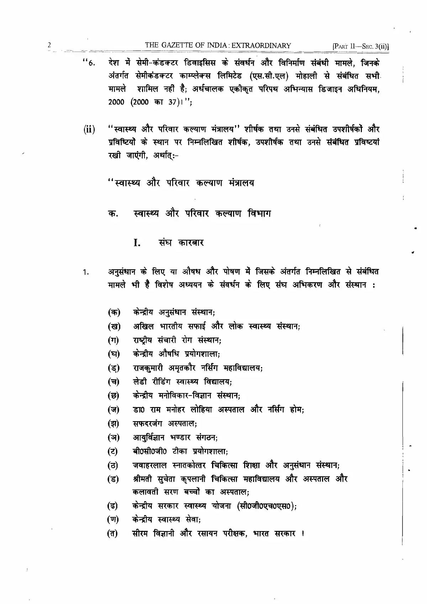
Page 3 of 18
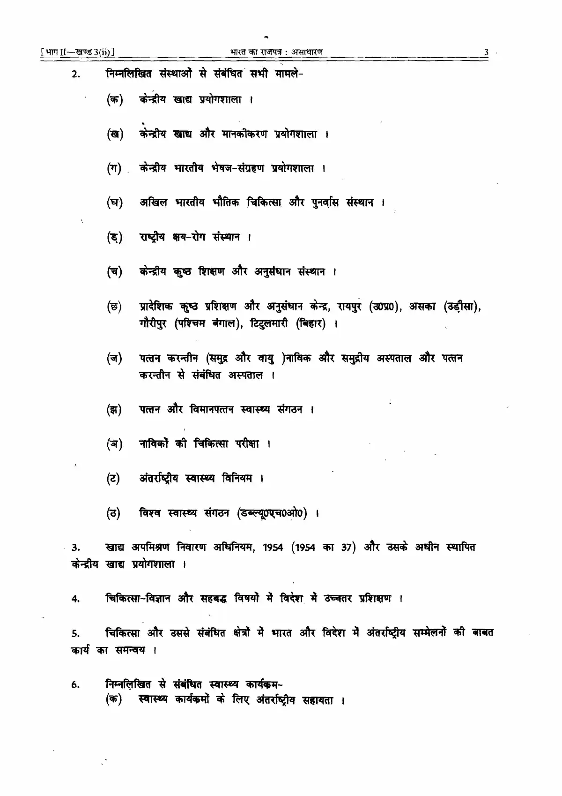
Page 4 of 18
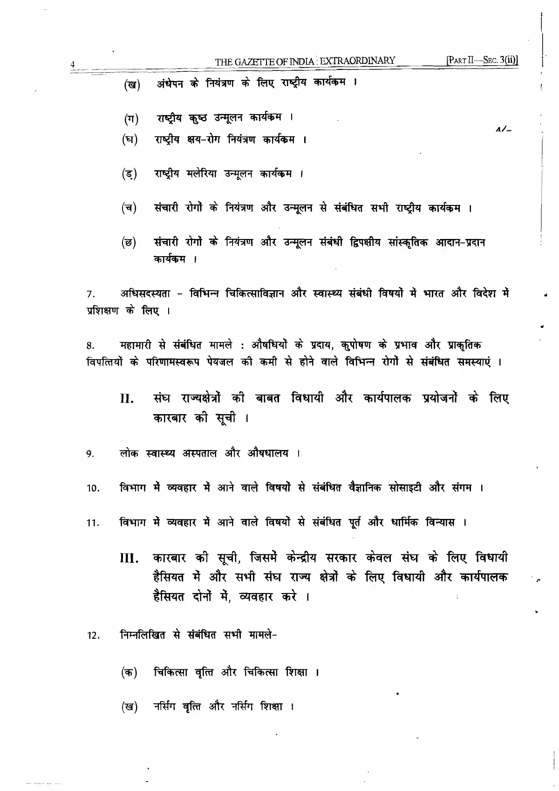
Page 5 of 18
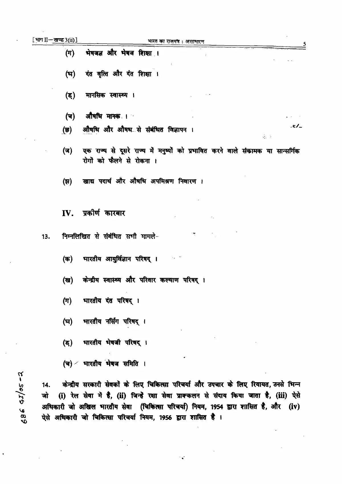
Page 6 of 18
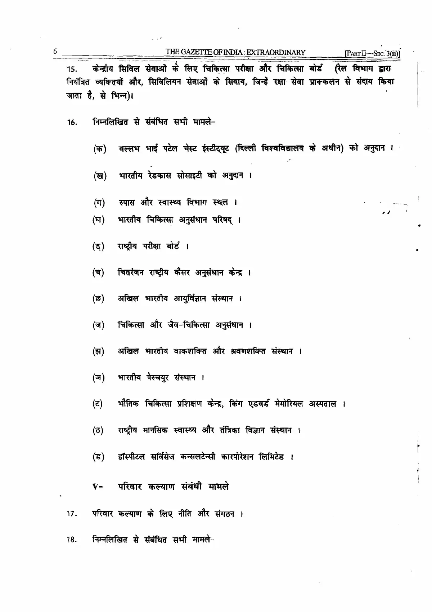
Page 7 of 18
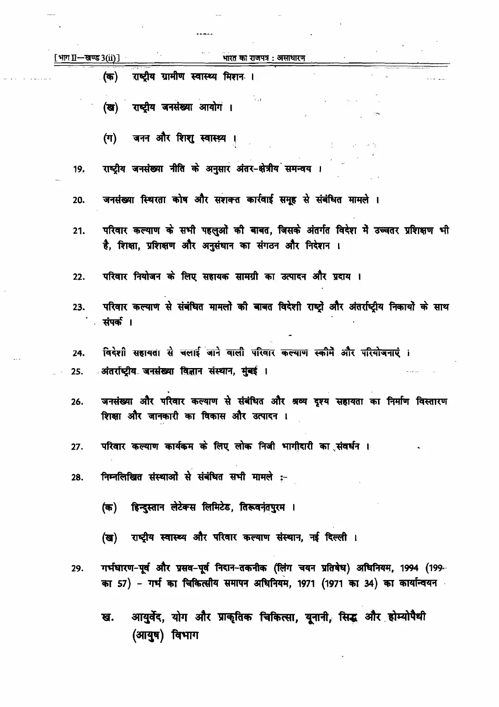
Page 8 of 18
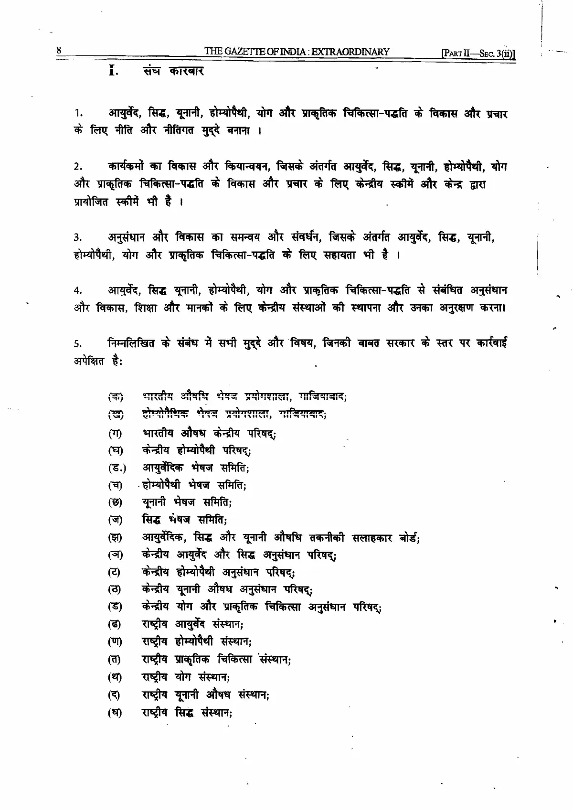
Page 9 of 18
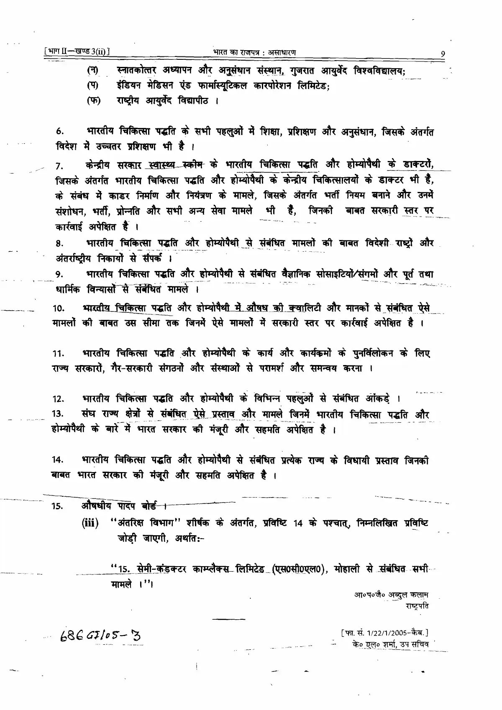
Page 10 of 18
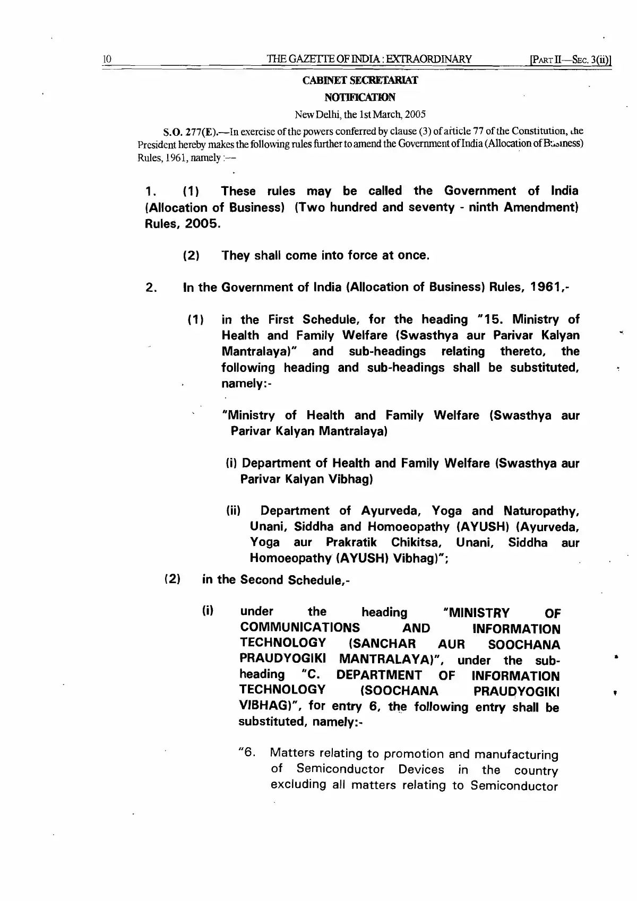
12Schedule 1 › Ministry of Health and Family Welfare
- Ministry of Health and Family Welfare
- i. Department of Health and Family Welfare
- ii. Department of Ayurveda, Yoga and Naturopathy Unani, Siddha and Homoeopathy (AYUSH)
applied at schedule 1 › ministry 15 in the Rules after #279
states inferred number kept
Schedule 2 › MINISTRY OF COMMUNICATIONS AND INFORMATION TECHNOLOGY › DEPARTMENT OF INFORMATION TECHNOLOGY › entry 6
- 6. Matters relating to promotion and manufacturing of Semiconductor Devices in the country excluding all matters relating to Semiconductor Complex Limited (SCL), Mohali; The Semiconductor Integrated Circuits layout Design Act, 2000 (37 of 2000).
applied at schedule 2 › ministry MINISTRY OF COMMUNICATIONS AND INFORMATION TECHNOLOGY › department C › entry 6 in the Rules after #279
read page break
Page 11 of 18
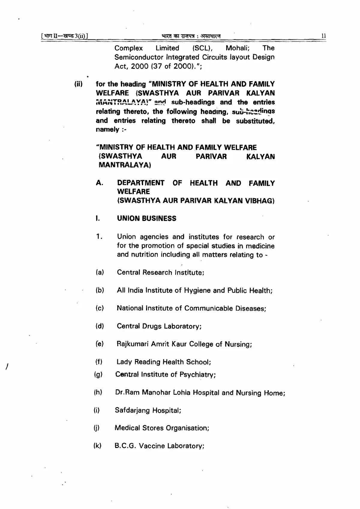
3Schedule 2 › MINISTRY OF HEALTH AND FAMILY WELFARE
- MINISTRY OF HEALTH AND FAMILY WELFARE
- A. DEPARTMENT OF HEALTH AND FAMILY WELFARE
- I. UNION BUSINESS
- 1. Union agencies and institutes for research or for the promotion of special studies in medicine and nutrition including all matters relating to -
- a. Central Research Institute
- b. All India Institute of Hygiene and Public Health
and 131 more
- c. National Institute of Communicable Diseases
- d. Central Drugs Laboratory
- e. Rajkumari Amrit Kaur College of Nursing
- f. Lady Reading Health School
- g. Central Institute of Psychiatry
- h. Dr.Ram Manohar Lohia Hospital and Nursing Home
- i. Safdarjang Hospital
- j. Medical Stores Organisation
- k. B.C.G. Vaccine Laboratory 12 (1) Jawaharlal Institute of Post-Graduate Medical Education and = Research
- m. Smt. Sucheta Kirpalani Medical College and Hospital and Kalawati Saran Children's Hospital
- n. Central Government Health Scheme (CGHS) (0) Central Health Service
- p. Serologist and Chemical Examiner to the Government of India.
- 2. All matters relating to the following Institutions-
- a. Central Food Laboratory.
- b. Central Food and Standardisation Laboratory.
- c. Central Indian Pharmacopoeia Laboratory.
- d. All India Institute of Physical Medicine and Rehabilitation.
- e. National Tuberculosis Institute.
- f. Central Leprosy Teaching and Research Institute.
- g. Regional Leprosy Training and Research Centre, Raipur (Uttar Pradesh), Aska (Orissa), Gauripur (West Bengal) Teetulmari (Bihar).
- h. Port Quarantine (sea and air) seamen's and marine hospitals and hospitals connected with port quarantine.
- i. Port and Air Port Health Organisations.
- j. Medical Examination of seamen.
- k. International Health Regulations. (I) World Health Organisation (WHO).
- 3. Prevention of Food Adulteration Act, 1954 (37 of 1954) and the Central Food Laboratory set up thereunder.
- A. Higher training abroad in medical and allied subjects.
- 5. Coordination of work in respect of International Conferences in India and abroad in medical and related fields.
- 6. Health Programmes relating to-
- a. . International aid for Health Programmes.
- b. National Programme for Control of Blindness.
- c. National Leprosy Eradication Programme.
- d. National Tuberculosis Control Programme.
- e. National Malaria Eradication Programme.
- f. All National Programmes relating to control and eradication of communicable diseases.
- g. Bilateral Cultural Exchange Programmes relating to control and eradication of communicable diseases.
- 7. Fellowships-for training in India and abroad in various medical and health subjects.
- 8. Matters relating to epidemics - Problems connected with supply of medicines, effects of malnutrition and shortage of drinking water leading to various diseases as a result of natural calamities.
- II. LIST OF BUSINESS FOR LEGISLATIVE AND EXECUTIVE PURPOSES IN RESPECT OF UNION TERRITORIES.
- 9. Public Health hospitals and dispensaries.
- 10. Scientific societies and associations pertaining to subjects dealt with in the Department.
- 11. Charitable and religious endowments pertaining to subjects dealt with in the Department. LIST OF BUSINESS WITH WHICH THE CENTRAL GOVERNMENT DEAL IN A LEGISLATIVE CAPACITY ONLY FOR THE UNION AND IN BOTH LEGISLATIVE AND EXECUTIVE CAPACITIES FOR ALL UNION TERRITORIES.
- 12. All Matters relating to-
- a. The Medical profession and medical education. 68695/05-4 14 [PART II - SEC. 3
- b. The nursing profession and nursing education.
- c. Pharmacists and Pharmacy education.
- d. The dental profession and dental education.
- e. Mental Health.
- f. Drugs Standards.
- g. Advertisements relating to drugs and medicines.
- h. Prevention of the extension from one State to another of infectious or contagious diseases affecting human beings.
- i. Prevention of adulteration of foodstuffs and drugs.
- IV. MISCELLANEOUS BUSINESS
- 13. All Matters relating to-
- a. The Medical Council of India.
- b. The Central Councils of Health and Family Welfare.
- c. Dental Council of India.
- d. Indian Nursing Council.
- e. Pharmacy Council of India
- f. Indian Pharmacopoeia Committee. i
- 14. Concession of medical attendance and treatment for Central Government servants other than (i) those in Railway Service (ii) those paid from Defence Service Estimates (iii) officers governed by the All India Services (Medical Attendance) Rules, 1954 and (iv) officers governed by the Medical…
- 15. Medical Examination and Medical Boards for Central Civil Services [other than those controlled by the Department of Railways and those paid from Defence Services Estimates excepting Civilian Services.].
- 16. All Matters relating to-
- a. Grants to Vallabhbhai Patel Chest Institute (under Delhi university).
- b. Grants to Indian Red Cross Society.
- c. Spas and Health resorts.
- d. The Indian Council of Medical Research.
- e. National Board of Examination.
- f. Chittaranjan National Cancer Research Centre.
- g. All India Institute of Medical Sciences.
- h. Medical and Bio-medical research.
- i. All India Institute of Speech and Hearing.
- j. Pasteur Institute of India.
- k. Physiotherapy Training Centre, King Edward Memorial Hospital. (I) National Institute of Mental Health and Neuro Sciences.
- m. Hospital Services Consultancy Corporation Limited. .V. FAMILY WELFARE MATTERS
- 17. Policy and organisation for Family Welfare.
- 18. All matters relating to:- ?
- a. National Rural Health Mission.
- b. National Commission on Population.
- c. Reproductive and Child Health. R
- 19. Inter-sectoral coordination in accordance with the National Population Policy.
- 20. Matters related to Janasankhya Sthiarta Kosh and Empowered Action Group.
- 21. Organisation and direction of education, training and research in all aspects of family welfare including higher training abroad.
- 22. Production and supply of aids to Family Planning. 6860I105-5
- 23. Liaision with foreign countries and international bodies as regards 1 matters relating to family welfare.
- 24. Family Welfare Schemes and projects with external assistance.
- 25. International Institute of Population Sciences, Mumbai.
- 26. Development and production of audiovisual aids, extensional education and information in relation to population and family welfare.
- 27. Promoting Public Private Partnership for the Family Welfare Programme.
- 28. All Matters relating to following Institutions:- :
- a. Hindustan Latex Limited, Thiruvananthapuram.
- b. National Institute of Health and Family Welfare, New Delhi.
- 29. Implementation of Pre-conception and Pre-natal Diagnostic Techniques (Prohibition of Sex Selection) Act, 1994 (57 of 1994) - Medical Termination of Pregnancy Act, 1971 (34 of 1971).
- B. DEPARTMENT OF AYURVEDA, YOGA AND NATUROPATHY UNANI, SIDDHA AND HOMOEOPATHY (AYUSH)
- I. UNION BUSINESS
- 1. Formulation of policy and policy issues for development and propagation of Ayurveda, Siddha, Unani, Homoeopathy, Yoga and Naturopathy systems.
- 2. Development and implementation of programmes including Central schemes and Centrally sponsored schemes for development and propagation of Ayurveda, Siddha, Unani, Homoeopathy, Yoga and Naturopathy systems. 1
- 3. Co-ordination and promotion of research and development including assistance therefor in Ayurveda, Siddha, Unani, Homoeopathy Yoga and Naturopathy systems.
- 4. Setting up and maintenance of Central institutions for research and development, education and standards relating to Ayurveda, Siddha Unani, Homoeopathy, Yoga and Naturopathy systems.
- 5. All issues and matters requiring action at the level of Government in regard to-
- a. Pharmacopoeial Laboratory for Indian Medicine, Ghaziabad
- b. Homoeopathic Pharmacopoeia Laboratory, Ghaziabad
- c. Central Council of Indian Medicines
- d. Central Council of Homoeopathy
- e. Ayurvedic Pharmacopoeia Committee
- f. Homoeopathic Pharmacopoeia Committee
- g. Unani Pharmacopoeia Committee
- h. Siddha Pharmacopoeia Committee
- i. Ayurvedic, Siddha and Unani Drugs Technical Advisory Board
- j. Central Council for Research in Ayurveda and Siddha
- k. Central Councii for Research in Homoeopathy (I) Central Council for Research in Unani Medicine
- m. Central Council for Research in Yoga and Naturopathy
- n. National Institute of Ayurveda
- o. National Institute of Homoeopathy
- d. National Institute of Naturopathy
- q. National Institute of Yoga
- r. National Institute of Unani Medicine
- s. National Institute of Siddha
- t. Institute of Post-Graduate Teaching and Research, Gujarat Ayurveda University
- n. Indian Medicines and Pharmaceuticals Corporation Limited i
- v. Rashtriya Ayurveda Vidyapeeth.
- 6. Education, Training and Research in all aspects of Indian Systems of Medicine including higher training abroad.
- 7. Matters of cadre formation and control including formation and amendment of recruitment rules, recruitment, promotion and all other service matters relating to Indian Systems of Medicine and Homoeopathy doctors of Central Government Health Scheme including doctors in Indian Systems of Medicine and…
- Note: Day-to-day administration and management will continue to be with the Director, Central Government Health Scheme.
- 8. Liaison with foreign countries and international bodies as regards matters relating to Indian Systems of Medicine and Homoeopathy.
- 9. Matters relating to scientific societies/associations and charitable 7 and religious endowments relating to Indian Systems of Medicine and Homoeopathy.
- 10. Matters relating to quality and standards for drugs in Indian Systems of Medicine and Homoeopathy to the extent such matters require action at the level of Government.
- 11. Consultation and coordination with State Governments, Non- Government Organisations and institutions for review of work and programmes in Indian Systems of Medicine and Homoeopathy.
- 12. Statistics relating to various aspects of Indian Systems of Medicine and Homoeopathy.
- 13. Proposals and matters concerning Union Territories requiring sanction and concurrence of Government of India in regard to Indian Systems of Medicine and Homoeopathy.
- 14. Legislative proposals pertaining to Indian Systems of Medicine and Homoeopathy of individual states requiring sanction and concurrence of Government of India.
- 15. Medicinal Plant Board.
applied at schedule 2 › ministry MINISTRY OF HEALTH AND FAMILY WELFARE in the Rules after #279
read page break
Page 12 of 18
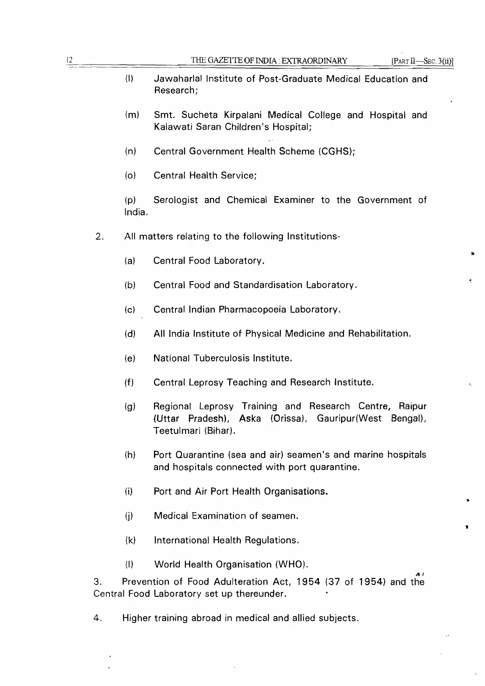
Page 13 of 18
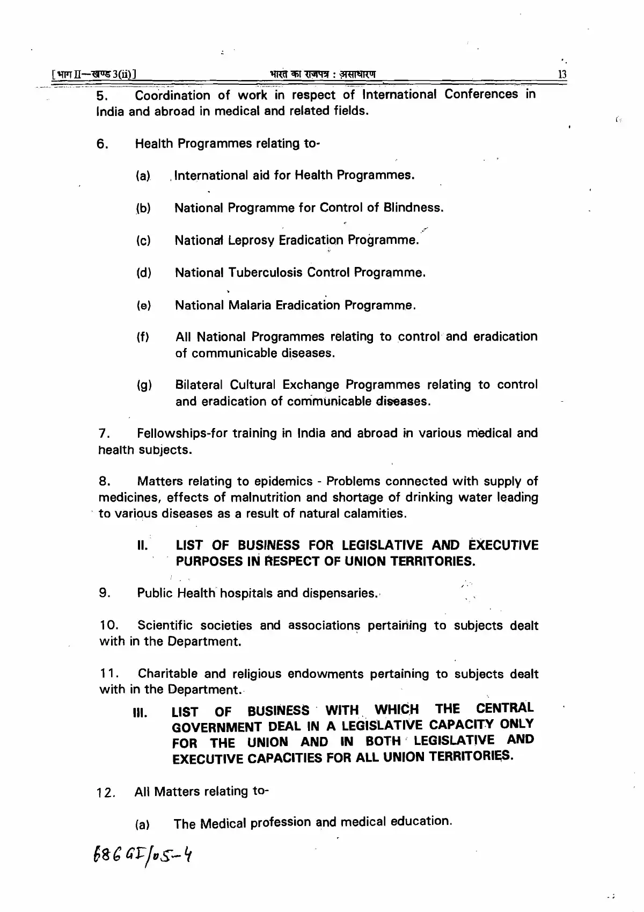
Page 14 of 18
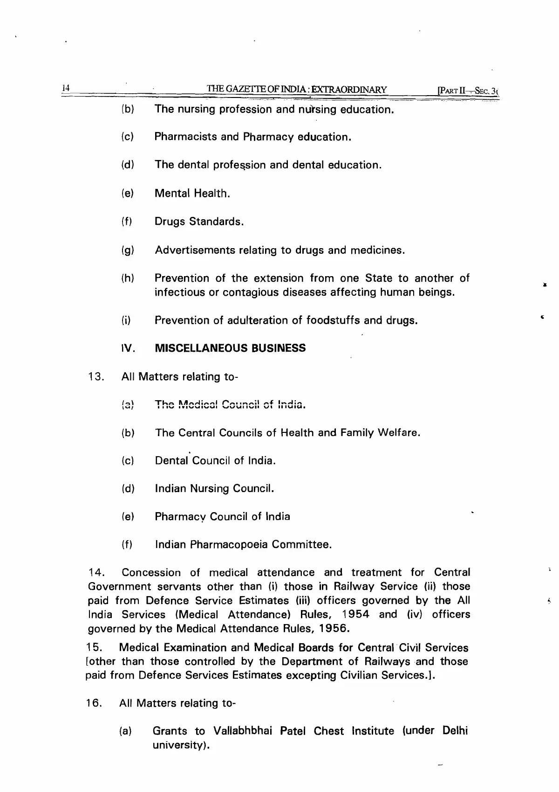
Page 15 of 18
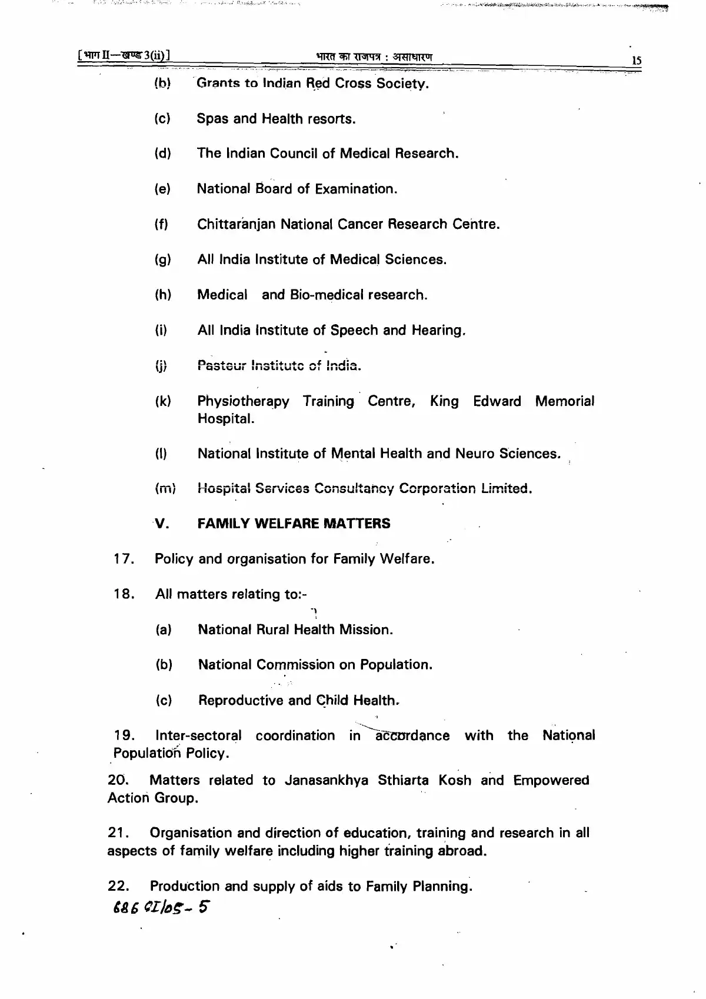
Page 16 of 18
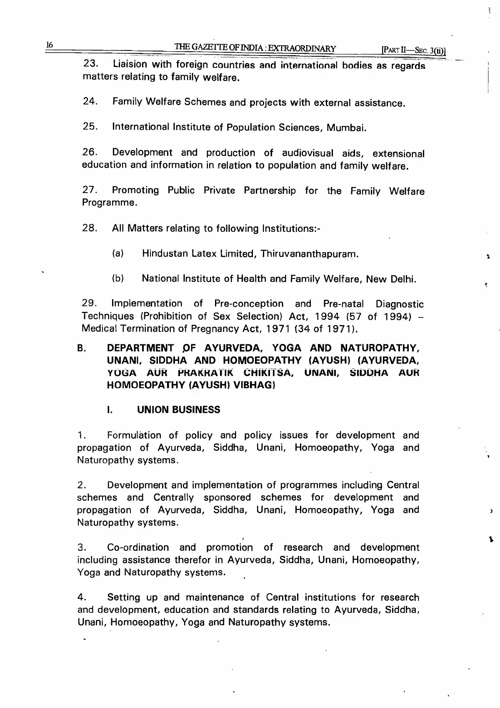
Page 17 of 18
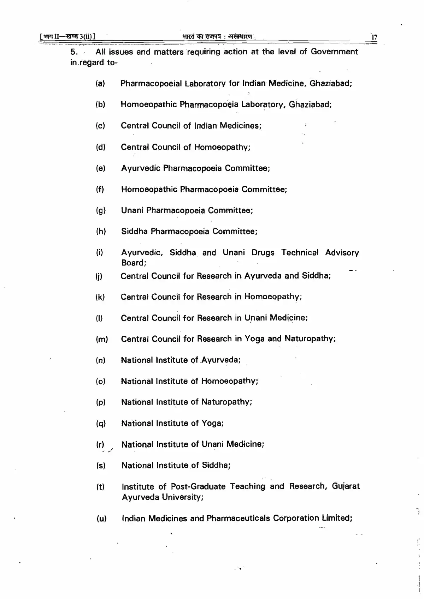
Page 18 of 18
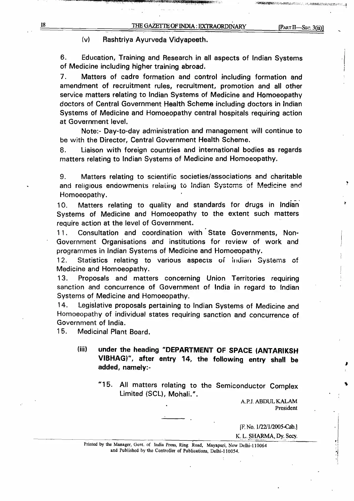
4after Schedule 2 › DEPARTMENT OF SPACE › entry 14
- 15. All matters relating to the Semiconductor Complex Limited (SCL), Mohali.
applied at schedule 2 › ministry DEPARTMENT OF SPACE › entry 15 in the Rules after #279
How this document was read
Changes placed by an inference rule
| Change | Rule | Status | What |
|---|---|---|---|
| 1 | number_kept | accepted | change 1: schedule 1 › ministry Ministry of Health and Family Welfare keeps its number 15, the heading put for it quoted without one |
From the Government of India (Allocation of Business) Rules, 1961 and their amendments, as published by the Cabinet Secretariat (cabsec.gov.in), read by orgpedia. The readings of the older scanned gazettes have known gaps.